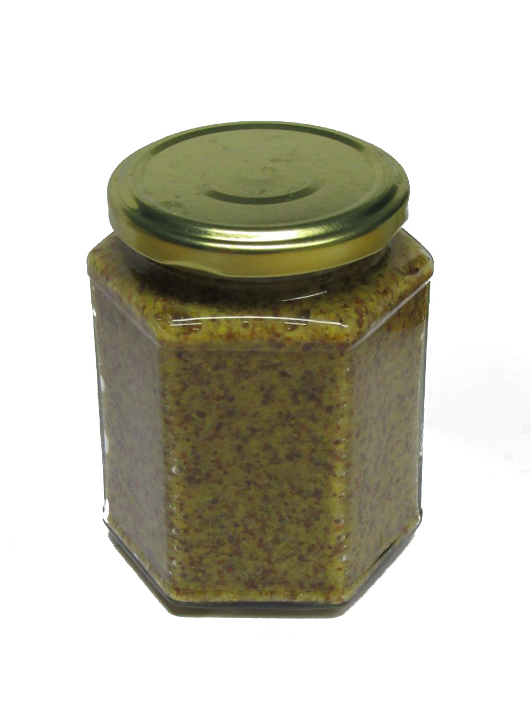

Senf 1
Dieser Senf hat als Fokus das Senfkorn für sich. Die körner, welche ausschließlich grob gemahlen oder ganz benutzt werden verleihen dem Senf ein sehr angenehmes Mundgefühl mit Elementen, welche man noch zerbeißen kann.
Während der Reife wird so aus einer bitteren-süßen Grütze ein scharfer Senf mit einer sehr leichten süßlichen Abrundung des intensieven Geschmacks. Außer Salz enthält der Senf keine anderen Gewürze, da diese das reine Geschmackserlebnis verunreinigen würden. Bei Bedarf können die Gewürze immernoch frisch dazugegeben werden.

Zutaten: Wasser,gelbe und schwarze Senfsaat, Branntweinessig, Zucker, Salz
Der Senf ist unter kühler, dunklerer Lagerung mindestens ein Jahr haltbar.
Preis: 300g-Glas/6€ ab dem dritten Glas 5€/Stk